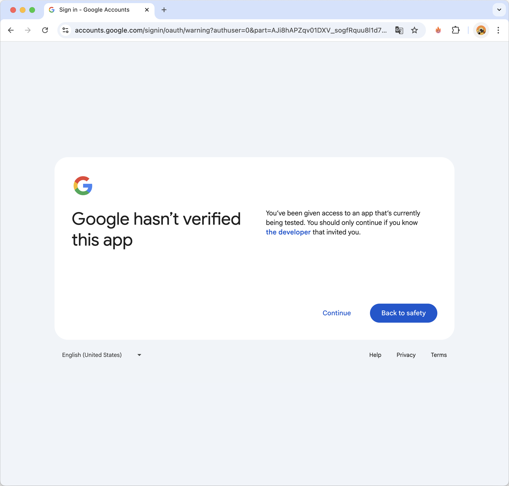
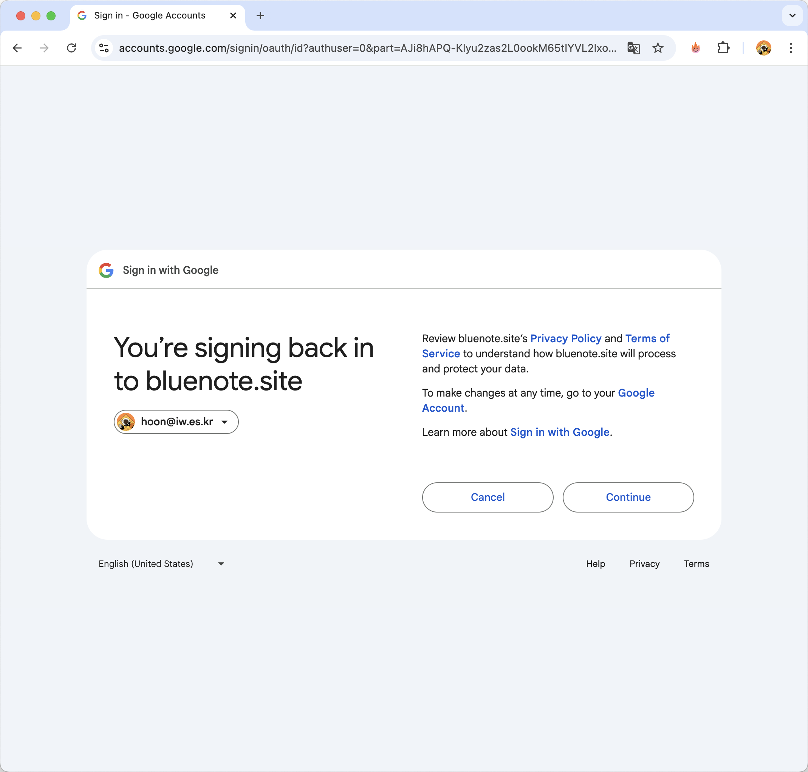
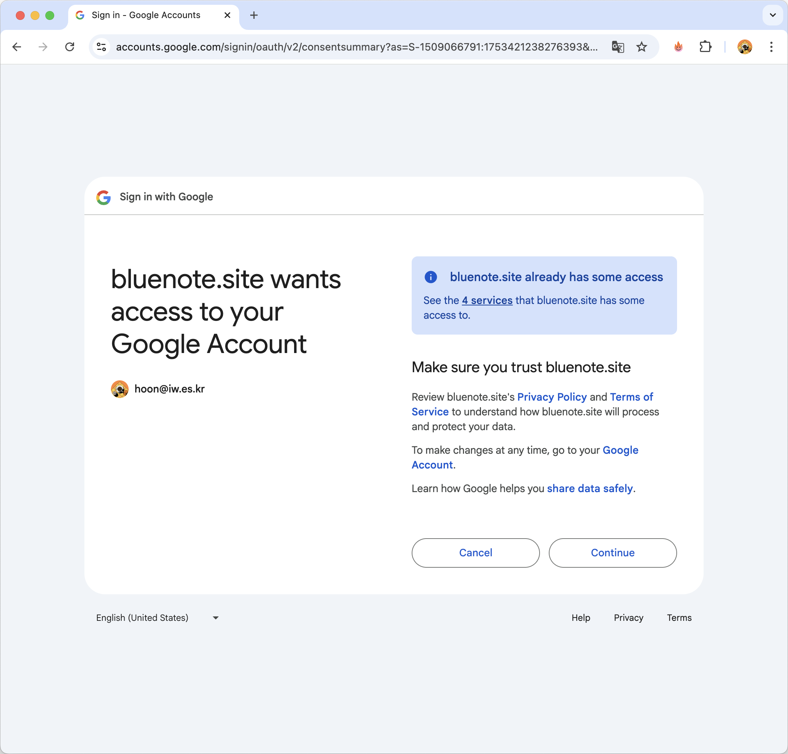
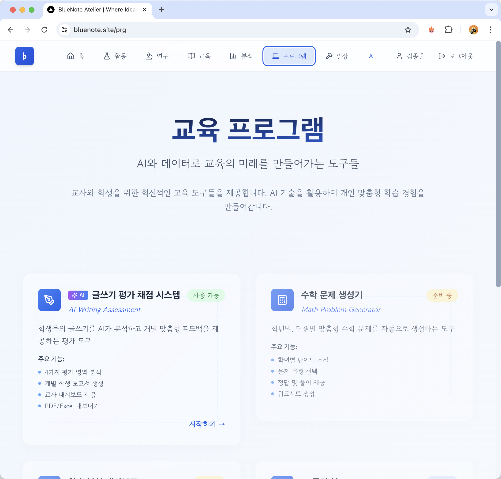

[이미지: 16-sonnet.png - Sonnet 4 채점 사례 화면]
[글쓰기 평가 시스템과 안내서는 교육과 연구를 위해 만들어졌습니다. 사용을 원하시면 hoon@iw.es.kr로 연락 주십시오.]
AI 글쓰기 평가 시스템은 선생님들이 학생들의 글쓰기 과제를 효율적으로 평가하고 관리할 수 있도록 돕는 통합 플랫폼입니다.
AI 글쓰기 평가 시스템은 bluenote.site에서 이용하실 수 있습니다.
[이미지: 01-bluenote.png - Bluenote 시스템 메인 화면]
💡 팁: 즐겨찾기에 추가하면 더 편리하게 이용할 수 있습니다.
[이미지: 02-login-page.png - Google 로그인 버튼이 있는 로그인 페이지]
|

① 구글 계정 선택 |

② 권한 요청 (Continue) |
|

③ Drive 접근 권한 |

④ 최종 확인 |
로그인 후 "프로그램" 네뉴를 선택하고, 글쓰기 평가 시스템을 선택합니다.
새 과제 만들기, 학생 글 가져오기, 평가 대시보드 등을 살펴보세요.
평가 메인 대시보드로 이동하면 학생들의 글을 채점할 수 있습니다.
[이미지: 07-main-dashboard.png - 과제 목록이 카드 형태로 표시된 메인 화면]
주요 구성 요소:
[이미지: 08-create-assignment.png - 과제 생성 폼]
입력 항목:
💡 팁: 명확한 평가 기준은 AI의 평가 정확도를 높입니다.
💡 팁: QR 코드도 활용할 수 있습니다.
[이미지: 09-submission-link.png - 제출 링크가 표시된 화면]
실시간으로 학생들의 제출 현황을 확인할 수 있습니다.
[이미지: 10-submission-status.png - 제출 현황 대시보드]
[이미지: 11-start-evaluation.png - AI 평가 시작 화면]
평가가 진행되는 동안 실시간으로 진행 상황을 확인할 수 있습니다.
[이미지: 12-evaluation-progress.png - 평가 진행 상황 표시 화면]
⚠️ 주의: 평가 중에는 페이지를 닫지 마세요. 백그라운드에서 계속 진행됩니다.
평가가 완료되면 전체 학생의 결과를 한눈에 볼 수 있습니다.
[이미지: 13-results-dashboard.png - 전체 평가 결과 대시보드]
주요 기능:
각 학생의 상세 평가 결과를 확인할 수 있습니다.
[이미지: 14-individual-report.png - 학생 개별 평가 리포트]
리포트 구성:
[이미지: 15-export-excel.png - Excel 내보내기 옵션 화면]
개별 학생 리포트를 PDF로 저장할 수 있습니다.
여러 학생의 리포트를 한 번에 다운로드할 수 있습니다.
일상적인 사용에 최적화된 스마트하고 효율적인 모델. 권장이라고 한 까닭은 API 사용료 때문으로 일반적인 방식의 실험 과정은 Sonnet 모델로 진행하고자 함.
[이미지: 16-sonnet.png - Sonnet 4 채점 사례 화면]
Anthropic의 가장 강력한 모델. 채점후 평가 의견 작성시 글쓰기 능력이 Sonnet 보다 우수해서 학생들에게 제시하기에 적합한 모델. 아직 프롬프트에 따른 결과의 차이를 발견하기 위해 다양한 글과 평가 상황을 만들어 결과를 검토하는 중임.

[이미지: 17-opus.png - opus 4 채점 사례 화면]
과제의 영역이 다른 글을 다른 채점 루브릭으로 채점을 하게 되었을 때의 결과. 채점의 타당성 등을 검토할 수 있는 사례.
[이미지: 18-out.png - 글의 종류가 다른 경우 채점 사례 화면]
최종 업데이트: 2025년 7월 25일